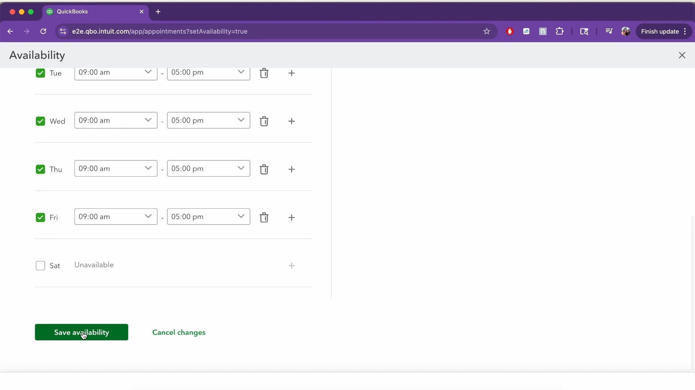
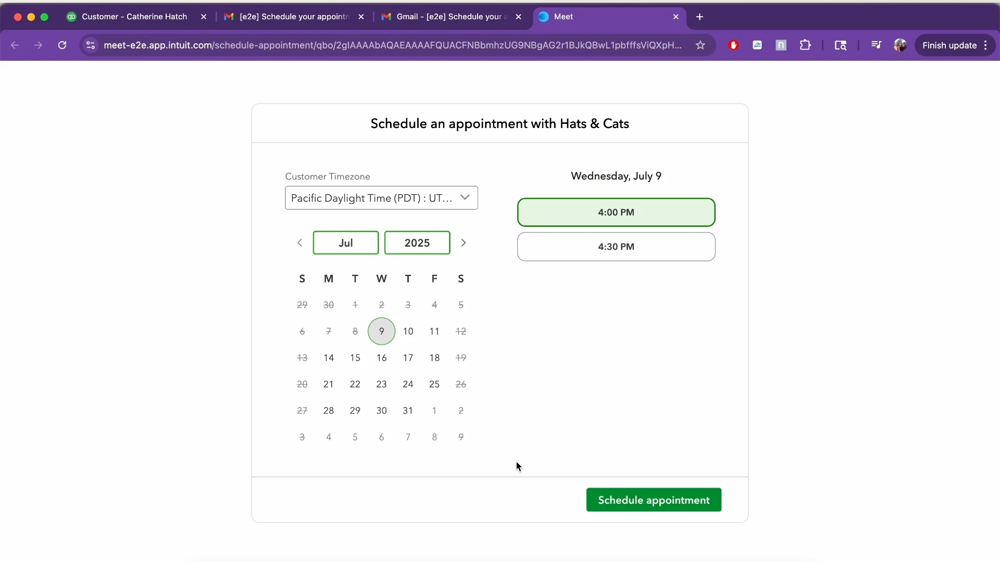
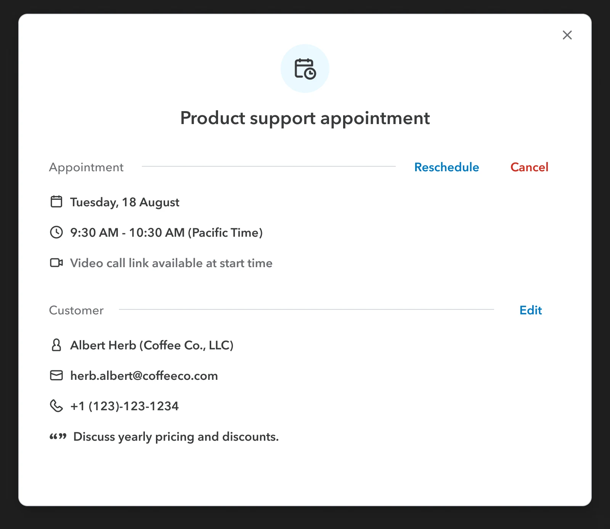
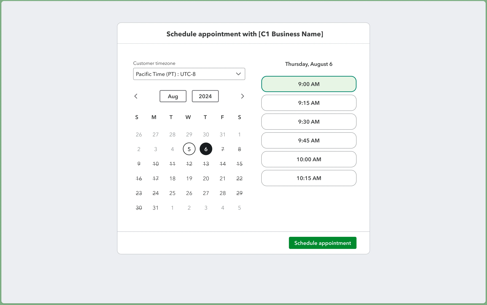

Appointments · Intuit · Group Product Design Manager · Jun 2024 – Apr 2025Bookings +367% year over year
available and protected, at the same time
58,000expert hours recovered in one quarter
−39%missed appointments
An expert's availability and their appointments are joined at the hip. Most calls ran under 30 minutes, yet every booking took a 60-minute block.
Experts have to give the whole call their attention, so they need to see the value of their time and stay on top of it. When booking limits ran out, they scheduled in personal calendars, where no one could see it.
What was in the way
60-minute slots by default.
Availability copied across systems.
Experts booking around the system.
Clear slots, booked automatically.Experts set clear availability. We moved off 60-minute manual blocks and helped them adopt automated slot booking.
Room to change.An appointment is easy to extend, move, or swap when it needs to be.
One calendar is the truth.Every system reads from the expert's one calendar, so a slot offered is a slot that can be kept.
The same four hours
Before
60 min
60 min
60 min
60 min
After
30
30
30
30
30
30
30
30
Four hours of an expert's day. Most calls ran under 30 minutes, so a 60-minute block left half of it unbookable.
The teamDesigned with the Virtual Expert Platform team and its engineers, who wrote up the platform in Contact Center Pipeline, September 2026.
+367%bookings, year over year
58,000expert hours recovered in one quarter
−39%missed appointments
10KEnterprise Suite customers at launch, July 2025
Source: Intuit engineering, Contact Center Pipeline, Sep 2026.
Shipped

Availability

Booking

Extend and swap

For QuickBooks customers
What it became
Booking is now open to all top-tier QuickBooks SKUs (Advanced, Accountant and Enterprise Suite), to offer to their own customers.